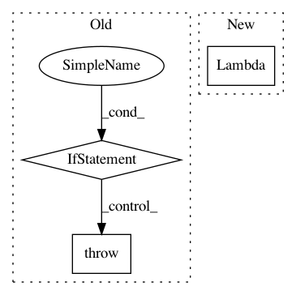

468d0b3898fb8276b6a487e52cf6a551622e693f,pytorch2keras/layers.py,,convert_padding,#Any#Any#Any#Any#Any#Any#Any#,1158
Before Change
print("Converting padding...")
if params["mode"] != "constant":
raise AssertionError("Cannot convert non-constant padding")
if params["value"] != 0.0:
raise AssertionError("Cannot convert non-zero padding")
if short_names:
After Change
print(layer)
return layer
lambda_layer = keras.layers.Lambda(target_layer)
layers[scope_name] = lambda_layer(layers[inputs[0]])
def convert_adaptive_avg_pool2d(params, w_name, scope_name, inputs, layers, weights, short_names):
In pattern: SUPERPATTERN
Frequency: 3
Non-data size: 3
Instances
Project Name: nerox8664/pytorch2keras
Commit Name: 468d0b3898fb8276b6a487e52cf6a551622e693f
Time: 2018-10-07
Author: nerox8664@gmail.com
File Name: pytorch2keras/layers.py
Class Name:
Method Name: convert_padding
Project Name: junyanz/BicycleGAN
Commit Name: a7d3ed3eba8f2b7a8143e7a4f35bfbd22ddfa2ca
Time: 2019-01-12
Author: junyanzhu89@gmail.com
File Name: data/base_dataset.py
Class Name:
Method Name: get_transform
Project Name: junyanz/pytorch-CycleGAN-and-pix2pix
Commit Name: f27da7d53aaad61ade08a59bd90fef1dadabb1c3
Time: 2019-01-11
Author: taesung89@gmail.com
File Name: data/base_dataset.py
Class Name:
Method Name: get_transform